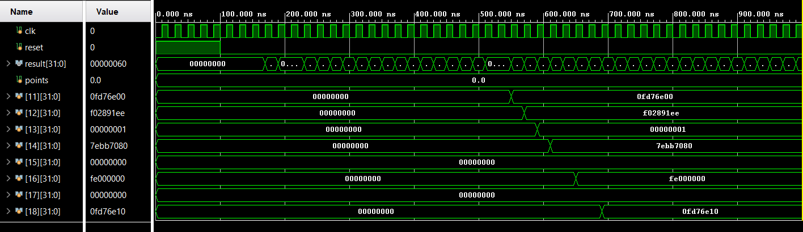

Pipelined MIPS Processor
Lab project · EECS 112L Organization of Digital Computer Lab
- Course
- EECS 112L
- Date
- Jan 2026
- Design
- 5-stage MIPS
- Tools
-
- Verilog
- Pipelining
- Forwarding
- Hazard detection
In this lab I added pipelining to the processor from an earlier lab, turning it into a five-stage MIPS pipeline written in Verilog. I implemented the instruction fetch, decode and execute stages, the forwarding unit, and the top-level module that connects all five stages through their pipeline registers, and I wired in the provided hazard detection logic.
Pipeline overview
How it works
- Five stages, four pipeline registers Instructions move through fetch, decode, execute, memory and write back, with registers between the stages. The IF/ID register has enable and flush inputs so it can hold or clear its instruction; the others pass their values on every clock.
- Data forwarding In execute, the forwarding unit compares each source register with the destinations in the EX/MEM and MEM/WB registers. On a match, a 4-to-1 mux feeds the newest result into the ALU, so dependent instructions don't wait for the register file.
- Load-use stalls Hazard detection catches a load followed by an instruction that needs its result. The PC and IF/ID register hold for one cycle while decode sends zeros down the pipeline as a bubble.
- Branches and jumps Both are resolved in decode. When one is taken, the instruction fetched behind it is flushed from IF/ID so it never executes.
Simulation
I checked the design against the provided testbench, simulating 1000 ns. Reset is held for the first 100 ns, so the test cases start at 100 ns. The tracked data memory locations update one by one and reach their expected values, and all provided test cases passed.
